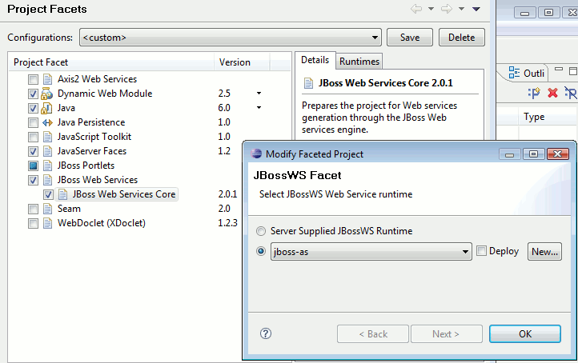

JBossWS support have been added, meaning you can now use WTP WebServices support with JBossWS.

Wizards
JBossWS WTP support integrates into the existing WebServices wizards (Web Service and Web Service Client) in Eclipse. See the JBossWS tools documentation for details